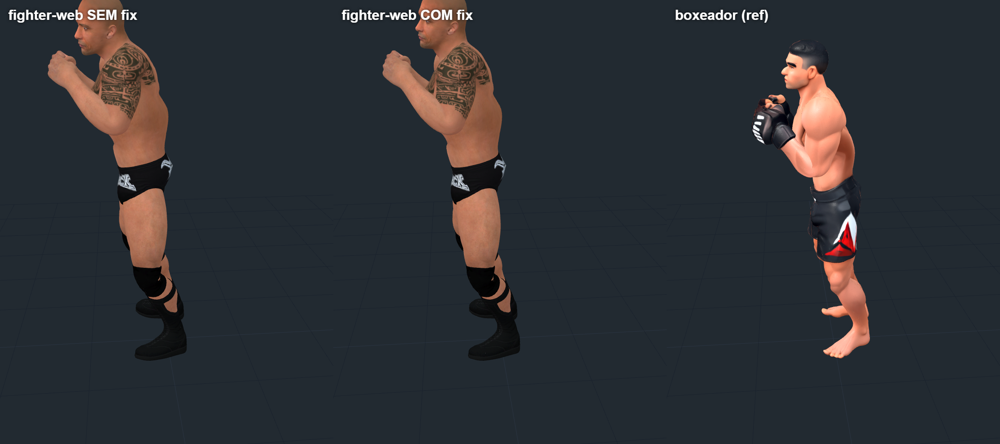
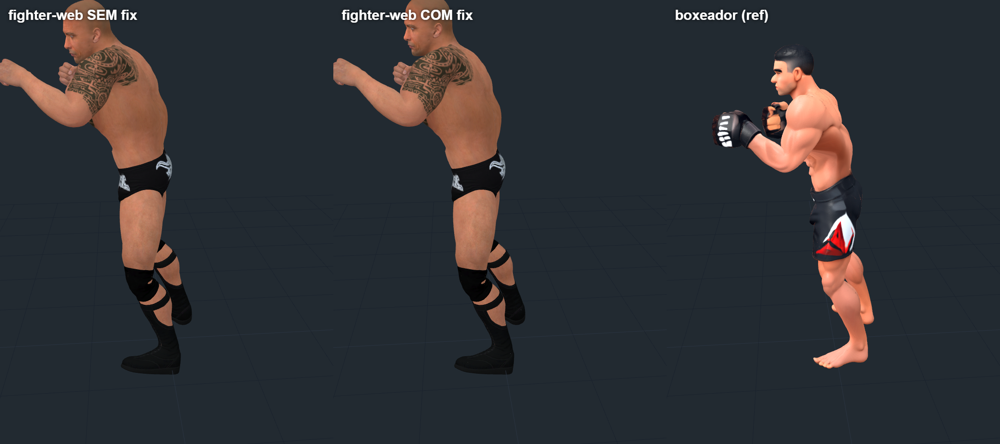
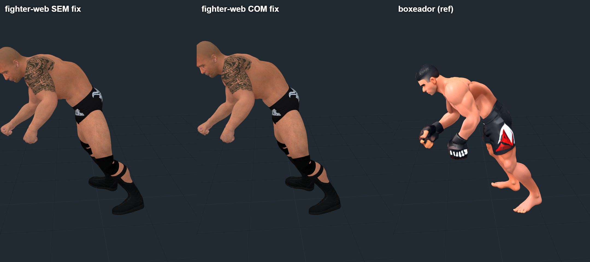

Coluna — fighter-web SEM fix | COM fix | boxeador (mesmo frame, fonte real)
Cada linha é o mesmo frame real do NLF (fit_smplx.npz). Painéis: (1) fighter-web solver antigo, (2) fighter-web solver corrigido, (3) boxeador referência.
Frame 67 — fonte ereta (~0° de inclinação)

Frame 500 — postura média (~8°)

Frame 1052 — fonte realmente inclinada (~57°)
